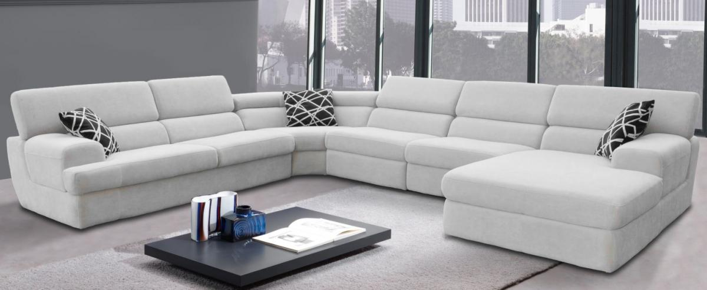

Da li znate! da vaša omiljena garnitura može izgledati ponovo isto kao kada ste je kupili.
Najboji i najbrži način rešavanja nagomilane nečistoće koje se talože u nameštaju,tepihu-itisonu je dubinsko pranje nameštaja. Vremenom ugaona garnitura,krevet,trosed,dvosed,fotelja itd.. postaje sve prljavija.Često na terenu susrećemo mušterije, koje kažu kako nazovi dubinsko pranje nameštaja rade ručno trljanjem sa krpom i četkom.U prošlosti ovakav metod se jedino i koristio,sve dok nisu izmišljene moćne ekstrakcione mašine sa kojima se jedino može raditi dubinsko ciscenje namestaja. Prema našem iskustvu potrebno vreme usluge za dubinsko pranje i ciscenje Karcher profesionalnom mašinom jednog sednog mesta je 15-20 minuta i zavisi od stepena zaprljanosti materijala.
Pitanje dakle glasi dali se tako mogu ukloniti nečistoće sa mebla ?
Naše iskustvo govori da ručno tretiranje nameštaja može samo prividno sa površine malo ukloniti zaprjlani nameštaj.Ali ispod površinskog sloja prljavština i bakterije ostaju netaknute.Ovo kod osetljvih osoba može dovesti i do alergiskih reakcija kao što je kožni osip,astma i migrena.Dakle zaključak je da ručno pranje nameštaja, dušeka ma koliko truda uložili, ne izvlači bakterije i prljavštinu.Kakav proces to obezbeđuje?
Odgovor:onaj koji ima mogućnost dubokog izvlačenja nataložene zaprljanosti a to su naše usluge vezane za dubinsko pranje nameštaja odnosno mebla.
Voda i originalni Karcherov prašak(90% bio-razgradiv)se rasprši pod visokim pritiskom i distribuira po štofu u obliku finog raspršivača.Sredstvo za pranje nameštaja ulazi dubinski u mebl gde se javlja hemjiska reakcija što dovodi do slabljenje veze između molekula zagađenja i vlakana mebl štofa a ostatak i Karcher prašak zajedno sa prljavštinom uklanjaju se usisnom silom ekstraktora usisivača i u odnosu na stepen prljavosti malo sačeka zatim odmah usisava da sva prljavština sa tapaciranog namestaja nestane.Mlaz papučice (brzina prskanja 2l/1min) prodire 5-7cm u dubinu sunđera.Proces rada se ponavlja dok kroz providnu usisnu papučicu ne krene čista voda,što predstavlja znak da je postupak završen i treba sačekati da se osuši.Ovo je ujedno i "zlatni standard" za pranje namestaja što većina proizvođača preporučuje.